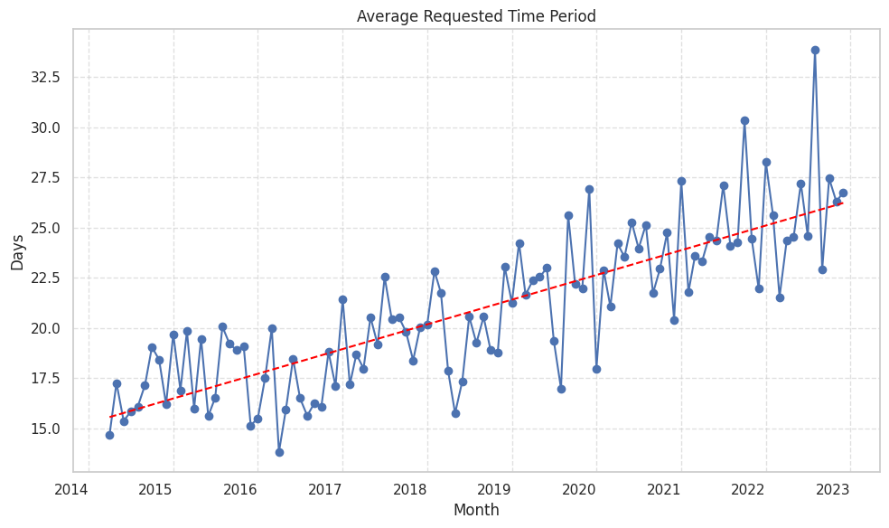
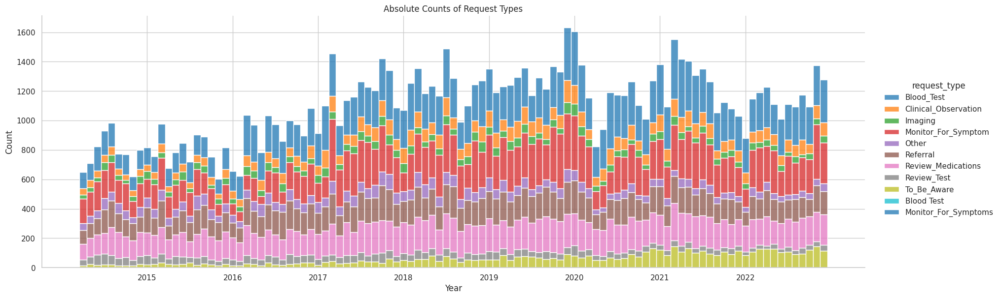

Finding 01Volume
+52%
Average requests per discharge increased
The estimated average number of GP-directed requests per discharge was higher at the end of the study period than at the beginning.
Study snapshot / Salford Royal Hospital
We used large language model extraction to study GP-directed requests in 260,000 discharge summaries from Salford Royal Hospital across 2014-2023.
01 / Summary
The analysis describes temporal patterns in requests documented in discharge summaries. It does not, by itself, measure completed work or clinical burden.
The estimated average number of GP-directed requests per discharge was higher at the end of the study period than at the beginning.
The average requested time period associated with extracted requests increased across the study period.
02 / Evidence
Monthly estimates vary. The figures show the plotted series used to summarise changes over time.



03 / Reading the letters
We prompted a large language model to identify requests directed to GPs, then classified extracted requests by type and stated timeframe.
The results should be interpreted as patterns in documented requests, subject to extraction accuracy and local documentation practice.
“Thank you for your continued care. Please check U+Es in 1-2 weeks. Ramipril was held due to stage 2 AKI. Review in a month.”
260,000 discharge summaries from Salford Royal Hospital.
Prompt an LLM to find requests directed to GPs.
Estimate temporal patterns in request frequency, type, and timeframe.
04 / Interpretation
In this dataset, GP-directed requests became more frequent and were associated with longer stated timeframes. These trends may reflect changes in discharge documentation, case complexity, service configuration, or task allocation across care settings.